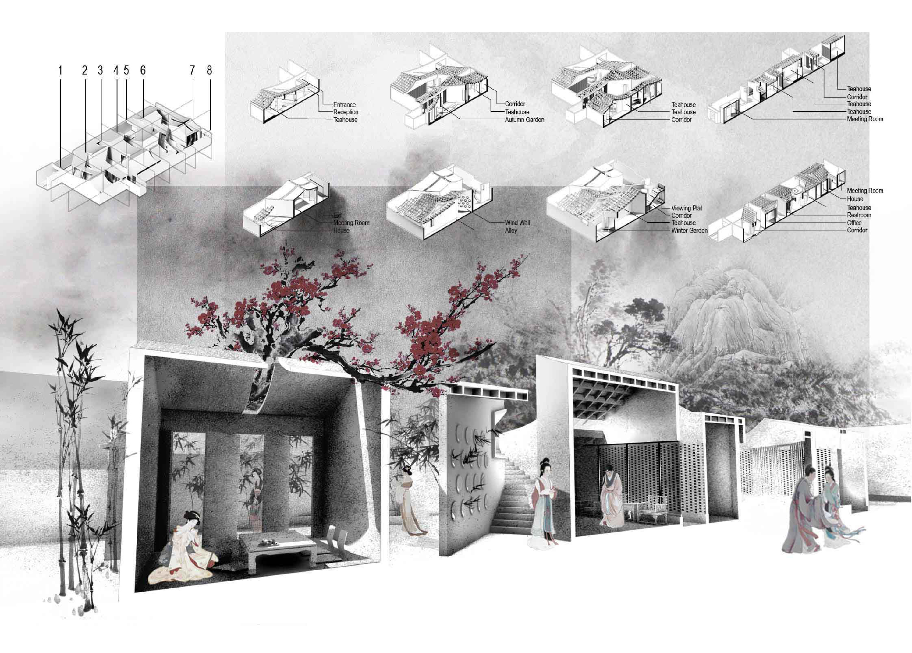

The site is located in the center of Yangzhou, adjacenting to one of the hottest tourist attractions: Ge Park. The site is surrounded by traditional Chinese houses, linking to a busy street and to silent ancient alleys. Moreover, it plays an important role in the space conversion. Based on the background of the city environment, the project is willing to present a semi private state in order to create a traditional Chinese architectural culture atmosphere.
Different scales of spaces and courtyards are shown in the section. Strict space hierarchy is broken into a system of several secondary courtyards and rooms. The relationship of programs in the living part are conserved, and new added commercial and cultural parts appear to actived surrounding environment.
First Floor Plan
Renderings
Generally speaking, the central axis should run from north to south, with its north end pointing directly to a mountain running from east to west. The mountain is regarded as the guardian of the city. A winding river around the city is believed to be an auspicious feature.